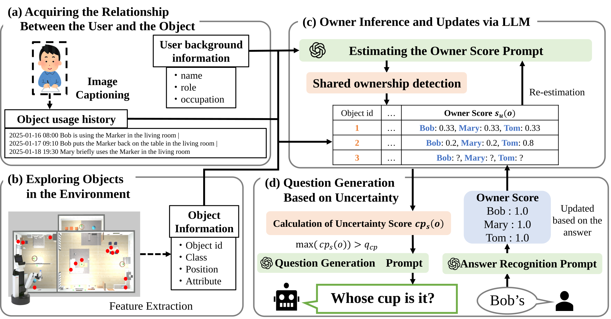

Whose Is This?: Context-Aware Object Ownership Inference with Uncertainty-Guided Questioning
Abstract
Service robots must infer object ownership to correctly interpret instructions such as “bring me my cup.” However, ownership is a latent attribute that cannot be directly observed, and existing methods often rely on limited cues such as recent usage, making them unreliable in scenarios such as temporary sharing. We propose a framework for context-aware ownership inference with uncertainty-guided interaction (COIN). The method integrates user background information and object usage history using a large language model (LLM) to estimate ownership scores. To handle uncertainty, we apply conformal prediction to construct a set of plausible owners and selectively generate user queries when the prediction is uncertain. Experiments in a simulated home environment show that the proposed method consistently outperforms baseline approaches, achieving a Subset Accuracy of 0.988 and a Mean Jaccard index of 0.991. The method also maintains high performance in scenarios involving temporary use and shared ownership. The results demonstrate that combining contextual reasoning with uncertainty-aware interaction improves both estimation accuracy and robustness.

Overview of the proposed framework. (a) The robot estimates ownership scores using an LLM based on user background information and object usage history. When the estimation is uncertain, it prompts the user to confirm object ownership. The responses are used to update the ownership scores, which are then stored in the semantic map. (b) The object usage history captures differences in users and their interactions with objects, enabling the robot to recognize temporary usage. (c) By leveraging the semantic map augmented with ownership scores, the robot can interpret language instructions that include ownership references.

Overview of the proposed method. (a) The robot is assumed to have access to user background information obtained in advance. It also collects and accumulates interaction histories between users and objects based on observations. (b) The robot explores the environment and acquires object-level information, including spatial locations, object classes, and visual features. (c) By integrating user background, object usage history, and observed object information, the robot estimates ownership scores for each object. The estimates are iteratively updated, allowing the system to handle temporary usage and borrowing scenarios. (d) The uncertainty of the ownership estimation is evaluated, and the robot selectively generates questions only for objects with high uncertainty. This reduces unnecessary queries while improving estimation accuracy.
BibTeX
@article{hashimoto_coin_2026,
title={{Whose Is This?: Context-Aware Object Ownership Inference with Uncertainty-Guide Questioning}},
author={Hashimoto, Saki and Taniguchi, Akira and Hasegawa, Shoichi and Hagiwara, Yoshinobu and Taniguchi, Tadahiro},
journal={Advanced Robotics (under review)},
year={2026}
}